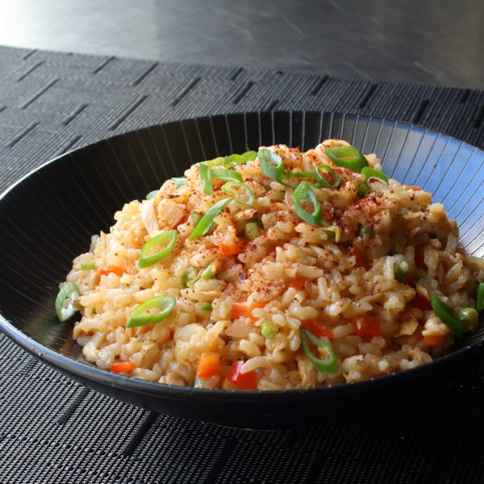

Spicy Tuna Bowl

Spicy tuna bowl,the perfect balance between protein and starch.
Significantly lighter, and actually very low on fat content.The ideal meal after a workout!
Ingredients
- 1 cup uncooked long-grain rice
- 1 ½ cups water
- 1 (7 ounce) jar tuna packed in olive oil
- ½ cup finely diced red bell pepper
- ¼ cup finely diced jalapeno pepper
- ¼ cup finely sliced green onions
- ⅓ cup seasoned rice vinegar
- ½ lemon, juiced, or to taste
- 2 tablespoons soy sauce
- 2 teaspoons Sriracha hot sauce
- ½ teaspoon sesame oil
- 1 pinch Korean red pepper flakes (gochugaru), or to taste
- 1 teaspoon finely sliced green onion, or to taste
Steps
Step 1
- Pour rice into a heavy pot and add water; swirl to allow rice to settle. Bring to a simmer over medium-high heat; do not stir. Reduce heat to low, cover, and continue to simmer for 15 minutes.
Step 2
- While rice is cooking, place tuna into a large mixing bowl and break up with your hands or a fork. Toss in red bell pepper, jalapeno, 1/4 cup green onions, rice vinegar, lemon juice, soy sauce, Sriracha, and sesame oil. Mix with a fork until thoroughly combined.
Step 3
- Turn off heat and let rice sit, covered, for 10 minutes.
Step 4
- Fluff rice with a fork to separate the grains and break up any large clumps; transfer into the mixing bowl. Mix thoroughly with a spoon until all the ingredients are evenly incorporated. Taste and adjust seasoning if needed. Serve warm, at room temperature, or cold like a rice salad, topped with red pepper flakes and 1 teaspoon green onion.
Back to main page